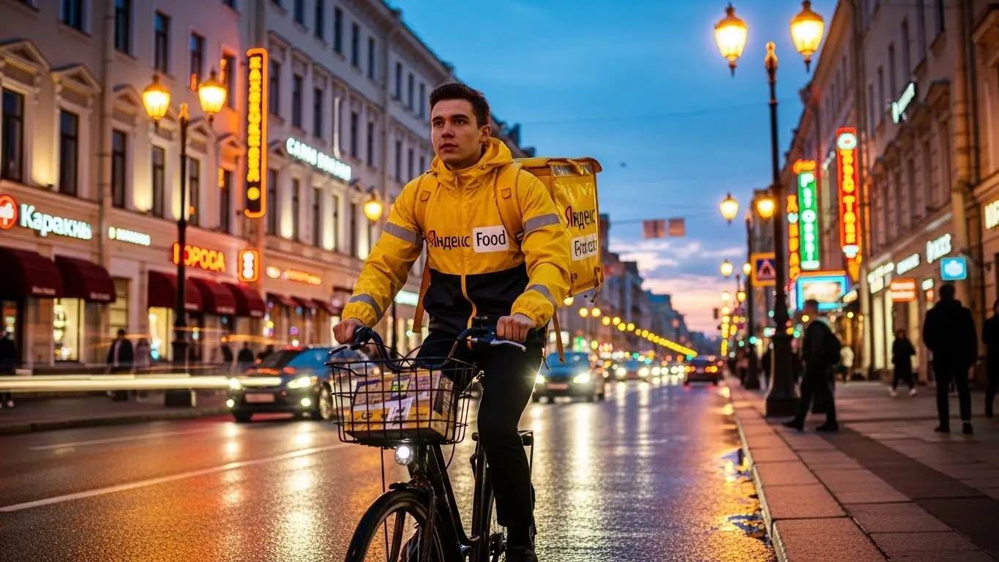
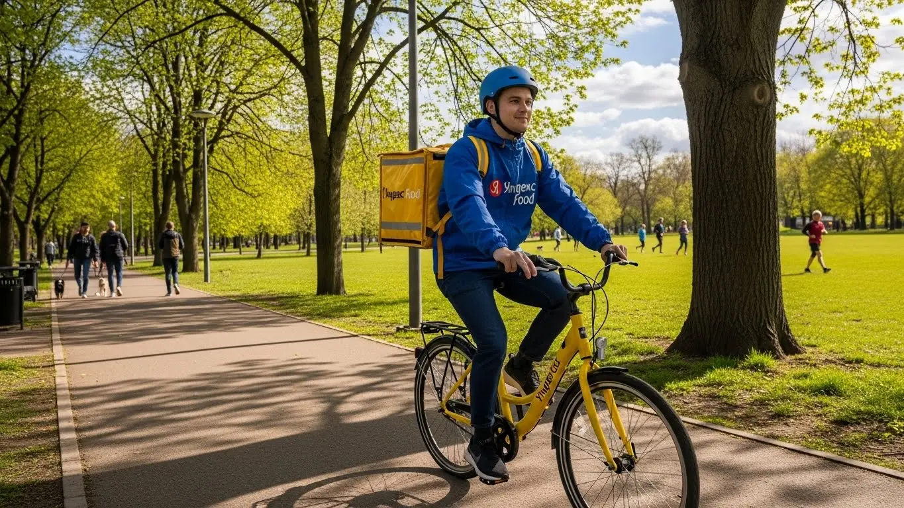

Работа курьером Яндекс Еда в Новокузнецке: доход и отзывы
- Работа курьером Яндекс Еды в Новокузнецке: для кого эта вакансия и что вы получите
- Сколько вы будете зарабатывать курьером в Новокузнецке: калькулятор дохода и разбор выплат
- Реальный заработок курьера в Новокузнецке: смены и месячный доход
- График работы и форматы занятости
- Требования к кандидату и документы
- Самозанятость, налоги и юридическая чистота
- Пошаговое оформление и первый выход на линию в Новокузнецке
- Пешком, на вело или на авто: что выгоднее в Новокузнецке
- Районы, маршруты и «топовые» зоны заказов в Новокузнецке
- Безопасность, страховка, штрафы и оплата простоя
- Плюсы и возможные минусы работы курьером в Новокузнецке
- Реальные истории и отзывы курьеров из Новокузнецка
- Ответы на главные вопросы о работе курьером Яндекс Еды в Новокузнецке
- Короткие ответы на главные вопросы
- Итоги и твой следующий шаг в Новокузнецке
Все города
Думаешь, работа курьером Яндекс Еда в Новокузнецке — это просто сесть на велосипед и получать лёгкие деньги? А как насчёт пробок на проспекте Металлургов в конце рабочего дня, «убитых» дорог в частном секторе Заводского района и риска слить первый же заработок на штрафы или ремонт? Забудь рекламные сказки про огромные цифры. Я расскажу, как обстоят дела на самом деле, здесь, на наших улицах, а не в отчётах московских маркетологов.
Поверь, без понимания местной «кухни» ты рискуешь разочароваться уже через пару недель. Твой реальный доход — это не просто цифра в приложении. Это минус бензин или амортизация вела, минус налог самозанятого, и всё это сильно зависит от того, где и когда ты работаешь. Большинство новичков в Кузне гоняются за каждым заказом, не понимая, что доставка из центра в дальнюю Новоильинку в час пик может съесть всю твою прибыль за час. Это классическая ошибка, на которой теряют время и деньги. Чтобы заранее оценить все условия, рекомендуем изучить страницу работа курьером Яндекс Еда в Новокузнецке, где есть калькулятор и форма заявки.
В этом гиде мы честно разберём всё по косточкам. Посчитаем, сколько реально можно заработать в Новокузнецке пешком, на велосипеде или на своей машине. Я покажу на карте самые «хлебные» районы и часы пик, когда заказов больше всего. Расскажу, как наша сибирская погода — от -30°C зимой до ливней летом — влияет на спрос и твой доход. Выясним, за что на самом деле прилетают штрафы и как их избежать. И, конечно, посмотрим, что предлагают конкуренты здесь, у нас в городе.
Меня зовут Алексей. Я сам откатал не одну тысячу километров с жёлтой сумкой по Новокузнецку, а сейчас у меня свой небольшой таксопарк-партнёр. Так что я знаю эту систему с обеих сторон — и как курьер, и как тот, кто помогает ребятам выходить на линию. Никакой рекламной шелухи, только мясо, только реальный опыт. Сейчас всё разложу по полочкам, давай по порядку.
Прежде чем мы нырнём в детали, давай быстро пробежимся по главным темам статьи. Это поможет сориентироваться.
Что ты точно узнаешь из этого разбора
В этой статье ты ТОЧНО узнаешь:
- Сколько реально можно заработать в Новокузнецке за смену пешком, на вело и на авто?
- В каких районах города больше всего заказов и как сибирская погода влияет на доход?
- Что выгоднее в Новокузнецке — работать пешком в центре, на велосипеде в спальниках или на машине по всему городу?
- Как за 10 минут оформить самозанятость и какие документы для этого нужны?
- За что на самом деле штрафуют, как работает бесплатная страховка и что такое оплата простоя?
- Как выбирать слоты и зоны в приложении, чтобы не кататься впустую и зарабатывать больше?
А если тебе некогда читать всю статью — переходи сразу к заключению, где ты найдёшь короткие ответы на все эти вопросы и указания, в каких разделах искать подробности.
А вот ключевые цифры и условия для Новокузнецка в одной картинке:
Работа курьером в Новокузнецке в цифрах
Доход в час
350-500 ₽
В часы высокого спроса и с бонусами
Заработок за смену
2800-3600 ₽
Средний доход за активную 8-часовую смену
Чаевые от клиентов
10-15%
Доля заказов с чаевыми, которые полностью ваши
Лучшее время
12-15 и 18-21
Пиковые часы в обед и ужин, а также в выходные
Работа курьером Яндекс Еды в Новокузнецке: для кого эта вакансия и что вы получите
Эта работа — не просто способ перебиться до зарплаты, а реальный инструмент, который можно настроить под себя. В Новокузнецке, как и в любом крупном промышленном городе, всегда есть спрос на доставку, и этим нужно пользоваться. Я сам начинал с этого и знаю, что здесь нет никаких начальников, которые стоят над душой, и сложных требований, которым нужно соответствовать.
Главное, что ты получаешь — это свобода. Свобода выбирать, когда и сколько работать, в каком районе города кататься и на чём — на своих двоих, на велосипеде или на машине. Это возможность получать ежедневные выплаты прямо на карту, а не ждать аванса неделями. Если подходить к делу с умом, то доставка из подработки быстро может превратиться в основной и весьма стабильный источник дохода.
Кому подойдёт эта работа в Новокузнецке
По моему опыту, в курьеры идут самые разные люди, и для каждого находится своя причина. Если узнаешь себя в одном из этих пунктов, значит, тебе стоит попробовать.
- Студентам. Идеальный вариант, чтобы совмещать с учёбой в СибГИУ или любом другом вузе. Можно выходить на пару часов после пар или работать полные дни на выходных. График полностью твой, никто не будет ругаться за пропуски из-за сессии.
- Тем, кто ищет подработку. Если у тебя есть основная работа, например, на заводе со сменным графиком, доставка — отличный способ заработать дополнительно. Вышел после смены, откатал 3–4 часа в своём районе — вот тебе и плюс к семейному бюджету.
- Людям без опыта. Здесь не нужен диплом или резюме на пять страниц. Всё, что требуется — это смартфон, умение ориентироваться в городе и желание работать. Пройдёшь короткое онлайн-обучение, и можно выходить на линию. Это один из самых простых способов начать зарабатывать с нуля.
- Водителям на своём авто. Если есть своя машина, она не должна простаивать. Работа автокурьером — это самые выгодные заказы: большие чеки из гипермаркетов, доставка в отдалённые районы, работа в любую погоду. Расходы на бензин окупаются с лихвой.
- Тем, кто ценит свободу и быстрые деньги. Если ты не любишь сидеть в офисе с 9 до 18 и хочешь видеть результат своего труда сразу, это твой формат. Заработал — получил. Заработок поступает на карту ежедневно — это и есть те самые быстрые ежедневные выплаты, которые очень мотивируют.
Главные преимущества для жителей районов Центрального, Заводского, Новоильинского
Одно из главных удобств — возможность работать там, где живёшь. Тебе не нужно тратить час-полтора на дорогу до «офиса». Ты просто выходишь из дома, включаешь приложение «Яндекс Про» и начинаешь выполнять заказы в своём или соседнем квартале.
Например, если ты живёшь в Центральном районе, у тебя под боком десятки кафе и ресторанов на проспектах Металлургов и Курако. Заказов здесь всегда валом, особенно в обеденное и вечернее время. Жителям Заводского района (Запсиба) тоже не нужно ехать в центр — хватает заказов из местных магазинов и заведений общепита, плюс всегда есть спрос на доставку в частный сектор. А в Новоильинском районе, с его плотной застройкой, можно на велосипеде или пешком очень быстро развозить заказы по соседним домам, не тратя время на пробки.
Это не только экономия времени и денег на проезд, но и комфорт. Ты знаешь свой район как свои пять пальцев: где срезать путь, где припарковаться, в каком подъезде не работает домофон. Это даёт огромное преимущество в скорости и, как следствие, в заработке.
Что по деньгам и условиям на старте
Давай по-честному и без пустых обещаний. В Новокузнецке активный курьер делает от 2000 до 4500 рублей за смену. Если рассматривать доставку как подработку на несколько часов в день, можно рассчитывать на 25 000–35 000 рублей в месяц. При полной занятости, особенно если ты водитель-курьер на автомобиле, доход может доходить до 80 000–100 000 рублей и выше.
Ключевые условия простые и прозрачные. Ты работаешь через единое приложение «Яндекс Про», где видишь все заказы — и от Яндекс Еды, и от Яндекс Доставки — и свой доход. Выплаты можно получать на свою банковскую карту ежедневно. График абсолютно свободный — ты сам решаешь, когда и на сколько выходить на линию. И самое важное — начать можно без опыта работы, всему научат в процессе.
Сколько вы будете зарабатывать курьером в Новокузнецке: калькулятор дохода и разбор выплат
Многих новичков пугает, что здесь нет фиксированного оклада. Но в этом и главный плюс: твой доход зависит напрямую от тебя, а не от настроения начальника. Система оплаты в Яндекс Еде прозрачная, и если разобраться в ней один раз, ты сможешь легко прогнозировать свой заработок и влиять на него.
Давай разберём по косточкам, из чего складываются те самые цифры, которые ты будешь получать на карту. Это не просто плата «за заказ», а целая система из нескольких компонентов. Понимание этой системы — ключ к хорошему доходу.
Из чего складывается доход курьера
Твой итоговый заработок за смену — это сумма нескольких составляющих. Важно понимать каждую из них, чтобы работать максимально эффективно.
- Оплата за заказ. Это базовая стоимость, которая включает в себя подачу в ресторан или магазин и доставку клиенту. Она уже учитывает сложность и тип заказа.
- Доплата за расстояние. Чем дальше ехать или идти — тем больше денег. Система честно считает каждый километр твоего маршрута от точки А до точки Б.
- Повышающие коэффициенты. Это твой главный инструмент для увеличения дохода. В приложении «Яндекс Про» есть карта спроса. Когда заказов в каком-то районе становится очень много (например, в обед в центре, в пятницу вечером или когда идёт сильный дождь), зоны на карте окрашиваются в яркие цвета. Работа в такой «фиолетовой зоне» умножает стоимость заказа на коэффициент, иногда в 2-3 раза.
- Бонусы. Сервис часто предлагает персональные цели. Например, «выполни 20 заказов за 3 дня и получи бонус 1500 рублей». Это отличная мотивация для активной работы. Также бывают гарантии минимального заработка в час в определённых зонах.
- Чаевые. Вся сумма, которую клиент оставляет в качестве чаевых через приложение, идёт тебе на карту. 100%, без комиссий. Вежливость и аккуратность напрямую конвертируются в деньги.
- Оплата простоя. Если ты пришёл в ресторан, а заказ ещё не готов, тебе не придётся ждать бесплатно. После определённого времени ожидания включается счётчик, и сервис доплачивает за простой.
- Компенсация проезда. Если ты пеший курьер и тебе выпадает длинный заказ, на который логичнее поехать на автобусе, система может предложить компенсацию стоимости проезда.
Как пользоваться калькулятором дохода
Чтобы ты мог прикинуть свой потенциальный заработок ещё до выхода на линию, на сайте есть специальный калькулятор. Пользоваться им проще простого.
Сначала выбираешь свой город — Новокузнецк. Затем указываешь, как планируешь доставлять: пешком, на велосипеде или как водитель-курьер на личном автомобиле. После этого выставляешь, сколько часов в день и сколько дней в неделю готов работать. На основе этих данных и статистики по городу калькулятор мгновенно покажет тебе примерный диапазон твоего дохода за день и за месяц. Понятно, что это ориентир, а не твёрдое обещание, но цифры довольно близки к реальности и помогают сориентироваться.
Прикинь свой возможный доход в Новокузнецке
Твой примерный доход в месяц:
*Это примерный расчёт на основе средней ставки для Новокузнецка. Реальный доход зависит от спроса, бонусов, чаевых и вашего способа передвижения.
Чтобы увидеть актуальные условия, требования и сразу подать заявку, загляни на страницу работа курьером Яндекс Еда в твоём городе — там есть и калькулятор, и ответы на вопросы, и сама анкета.
Примеры расчёта для пешего, вело- и авто‑курьера в Новокузнецке
Чтобы было понятнее, давай рассмотрим три реальных сценария для нашего города.
- Сценарий 1: Пеший курьер-студент. Парень работает после учёбы по 4 часа в день, 5 дней в неделю. Выбирает для работы Центральный район, где много заказов на короткие дистанции от кафе на улице Кирова до ближайших офисов и домов. В среднем за смену он выполняет 8–10 заказов. Его доход складывается из оплаты за заказы и небольших доплат за расстояние. За вечер выходит около 1300–1700 рублей. В месяц это даёт неплохую прибавку к стипендии — 26 000–34 000 рублей.
- Сценарий 2: Курьер на велосипеде в спальном районе. Мужчина работает в Новоильинском районе по выходным, по 8 часов в день. На велосипеде он быстро передвигается между многоэтажками, развозя продукты из магазинов и заказы из пиццерий. За счёт скорости он успевает сделать 15–20 заказов за смену. В выходные часто действуют повышенные коэффициенты. Его заработок за день может достигать 2500–3200 рублей.
- Сценарий 3: Водитель-курьер на автомобиле на полной занятости. Он работает 5 дней в неделю по 8–10 часов. Не привязан к одному району и берёт самые выгодные заказы по всему городу: от Запсиба до Новобайдаевки. Часто выполняет крупные доставки из гипермаркета «Лента» или возит заказы в плохую погоду, когда коэффициенты максимальные. Его дневной заработок стабильно держится в районе 3500–5000 рублей, а в удачные дни и выше. В месяц выходит 75 000–100 000 рублей до вычета расходов на бензин.
Реальный заработок курьера в Новокузнецке: смены и месячный доход
Теперь к главному — к деньгам. Никаких рекламных обещаний, только цифры из практики, которые я и мои ребята видим в Новокузнецке. Зарплата курьера — это не фиксированный оклад, а результат твоей активности, смекалки и умения быть в нужном месте в нужное время. Твой доход сильно зависит от того, как ты работаешь: как подработку на пару часов или как полноценную работу.

Диапазон дохода для подработки и полной занятости
Если ты ищешь подработку на 2–4 часа в день, например, после основной работы или учёбы, то цифры в Новокузнецке будут примерно такие. Пеший курьер в центре за вечерний слот может сделать 1000–1500 рублей. Велокурьер за то же время заработает больше, около 1200–1800 рублей, потому что успевает выполнить больше заказов на средние дистанции, например, в пределах Центрального района. Курьер на своём авто на подработке самый эффективный: за 3–4 часа в пиковое время можно заработать 1500–2500 рублей, особенно если брать заказы из центра в отдалённые районы вроде Новоильинского или Запсиба.
При полной занятости, когда ты на линии 8–10 часов в день, доход совсем другой. Пеший курьер, работая 5 дней в неделю, может рассчитывать на 50 000 – 70 000 рублей в месяц. Велокурьер, который не боится крутить педали, выйдет на 65 000 – 90 000 рублей. Самые высокие доходы у водителей-курьеров: здесь заработок может достигать 80 000 – 120 000 рублей в месяц. Но помни, из этой суммы нужно вычесть расходы на бензин и обслуживание машины. Все эти цифры — до вычета налога для самозанятых (6%).
Как район, время суток и погода влияют на доход
Твой доход — величина непостоянная, и на неё влияют три главных фактора. Во-первых, это район. В Центральном районе заказов всегда много, но дистанции короткие. Здесь хорошо работать пешком или на велосипеде. В Заводском или Новоильинском районах заказов меньше, но они дороже за счёт расстояния — это работа для автокурьеров и выносливых велосипедистов. Горячие точки — это крупные ТРЦ вроде «Планеты» или «Сити Молла», особенно в обеденное и вечернее время.
Во-вторых, время. Золотые часы для курьера — это обеденный пик (с 12:00 до 14:00) и вечерний (с 18:00 до 21:00). В это время в приложении «Яндекс Про» карта горит фиолетовым — это зоны повышенного спроса с высокими коэффициентами, которые могут умножить стоимость заказа в 1.5–2 раза. Выходные, особенно вечера пятницы и субботы, — это стабильно высокий поток заказов. Наконец, погода. Сибирская погода — наш лучший друг. Как только в Новокузнецке начинается сильный дождь, снегопад или мороз, количество заказов взлетает, а число курьеров на линии падает. Коэффициенты растут, а клиенты становятся щедрее на чаевые.
Советы по увеличению заработка от опытных курьеров
Чтобы зарабатывать больше, не обязательно пахать сутками. Вот несколько проверенных фишек. Всегда планируй свои смены и старайся бронировать плановые слоты на вечернее время и выходные — это самые прибыльные часы. Не гоняйся за одним заказом с высоким коэффициентом через весь город, если для этого придётся ехать 20 минут без дела. Лучше выбрать зону со стабильным, пусть и не максимальным, спросом, например, в районе проспекта Металлургов, и выполнять заказы один за другим.
Используй свой транспорт с умом. Если у тебя есть машина, это не значит, что нужно всегда работать на ней. В час пик в центре Новокузнецка ты больше простоишь в пробках, чем заработаешь. Иногда выгоднее оставить машину и поработать пару часов пешком в плотной застройке, а на авто выходить вечером для доставки на дальние расстояния. Главное — постоянно анализировать карту спроса в «Яндекс Про» и быть гибким.
У меня был парень, автокурьер, который поначалу жаловался, что в будни днём мало зарабатывает, а бензина жжёт много. Я посоветовал ему с 12 до 16 часов работать в формате «пешком» в районе ТРЦ «Сити Молл», где куча кафе и короткие доставки. А после 17:00 он садился в машину и развозил вечерние заказы по всему городу. В итоге его чистый дневной доход вырос примерно на 25-30%, а пробег сократился.
В общем, твой реальный доход в Новокузнецке зависит от умения планировать. Не просто выходи на линию, а выбирай лучшее время, район и способ доставки. И не бойся плохой погоды — именно она приносит самые большие деньги.
График работы и форматы занятости
Одно из главных преимуществ работы курьером — реальная свобода в планировании своего времени. Ты сам решаешь, когда и сколько работать. Это не просто слова, а основной принцип сервиса, который позволяет совмещать доставку с чем угодно: учёбой, основной работой, семьёй или хобби. Это отличный вариант, если ты ищешь работу без опыта: никто не будет стоять над душой и требовать выходить на смену, если ты этого не хочешь.
Подработка после учёбы или основной работы
Совмещать доставку с другой деятельностью проще простого. Вот пара реальных примеров из Новокузнецка. У меня работает студент из СибГИУ, он живёт недалеко от вуза. После пар, примерно в 16:00, он выходит на 4-часовой слот как пеший курьер. Работает в основном в Центральном районе, разносит заказы из кафе на улице Кирова и проспекте Металлургов. В будни у него выходит по 1200-1500 рублей за вечер, плюс он берёт полную смену в субботу. В итоге за месяц набегает стабильная прибавка к стипендии в 30-35 тысяч.
Другой пример — мужчина, который работает днём в офисе. У него есть своя машина. Три-четыре раза в неделю после работы, с 19:00 до 22:00, он выходит на линию как автокурьер. Берёт дорогие заказы из ресторанов в центре и развозит их по спальным районам. В выходной может отработать 5-6 часов днём. Такая подработка приносит ему дополнительные 40-50 тысяч в месяц, что для многих сопоставимо с основной зарплатой.
Полная занятость: как выглядит типичный день курьера
Если рассматривать доставку как основную работу, то день строится вокруг пиков спроса. Допустим, ты велокурьер. Твой рабочий день может выглядеть так: ты выходишь на линию около 11:00, чтобы к обеденному пику быть в Центральном районе. С 11:30 до 14:30 идёт плотный поток заказов из ресторанов и кафе. Ты практически не стоишь на месте, постоянно в движении.
После 15:00 наступает затишье. В это время можно спокойно пообедать, съездить домой отдохнуть или решить свои дела. На линию возвращаешься к 17:30, когда начинается вечерний пик. До 21:30-22:00 снова активная работа: люди заказывают ужины, продукты из магазинов. После этого можно либо завершить смену и поехать домой, либо, если есть силы, поработать ещё час-другой, выполняя ночные заказы. В конце дня в приложении «Яндекс Про» ты видишь свой доход за день и можешь сразу вывести деньги на карту — это и есть те самые ежедневные выплаты.
Как планировать слоты и выходы через приложение «Яндекс Про»
Твой главный инструмент — это приложение «Яндекс Про». В нём ты управляешь своим графиком. Есть два основных формата выхода на линию: плановые слоты и свободные выходы. Плановые слоты ты бронируешь заранее на определённое время и в определённом районе. Их плюс в том, что сервис гарантирует тебе минимальный доход за это время, даже если заказов будет мало. Это твой страховочный трос, который обеспечивает стабильность. Но здесь важна дисциплина: на слот нельзя опаздывать, это влияет на твой рейтинг.
Свободный выход — это полная свобода. Ты можешь в любой момент нажать кнопку «На линию» и начать работать, если находишься в зоне с активными заказами (она подсвечивается на карте). Этот формат подходит, если у тебя появилось пара свободных часов или ты видишь на карте зону с очень высоким коэффициентом. Но здесь нет гарантированного дохода — сколько заказов выполнил, столько и заработал. Опытные курьеры часто комбинируют оба формата для максимальной выгоды.
Был у меня новичок, который поначалу работал только на свободных выходах и жаловался на нестабильный доход: то густо, то пусто. Я ему посоветовал начать бронировать плановые слоты на вечерние часы и выходные. В итоге его заработок стал предсказуемым, он перестал нервничать в ожидании заказов и, как ни странно, даже стал зарабатывать больше, потому что высокий рейтинг за выполнение плановых слотов дал ему приоритет при распределении заказов.
Таким образом, свободный график — это не анархия, а инструмент, которым нужно научиться пользоваться. Планируй своё время через «Яндекс Про», будь пунктуален на плановых слотах, и у тебя будет стабильный и прогнозируемый доход.
Требования к кандидату и документы
Многих пугает, что для работы курьером нужно собирать кипу бумаг и соответствовать строгим критериям. На деле всё гораздо проще. Условия работы в Яндекс Еде специально продуманы так, чтобы начать мог почти любой желающий без специального образования или долгого опыта. Главное — быть совершеннолетним и иметь базовый набор документов.
Возраст, гражданство и базовые условия
Начнём с основ. Чтобы стать курьером-партнёром Яндекс Еды, тебе должно быть полных 18 лет. Это строгое требование связано с юридическим форматом сотрудничества — самозанятостью, которая доступна только совершеннолетним. По гражданству тоже есть чёткие рамки: ты должен быть гражданином Российской Федерации или одной из стран Евразийского экономического союза (ЕАЭС) — это Беларусь, Казахстан, Армения, Кыргызстан. Это требование закона для официального оформления.
Что касается физической формы, никаких нормативов сдавать не придётся. Важно трезво оценивать свои силы: пешему курьеру нужно быть готовым много ходить, а велокурьеру — крутить педали по несколько часов. Если планируешь работать на машине, само собой, понадобятся водительские права и документы на автомобиль. В целом, если ты можешь без проблем подняться на пятый этаж без лифта с пакетом продуктов, то с работой справишься.
Какие документы нужны для работы курьером
Список документов для оформления минимальный, и собрать его можно за полчаса. Тебе не придётся бегать по инстанциям, почти всё делается онлайн. Вот что понадобится, чтобы регистрация прошла максимально быстро:
- Паспорт РФ (или паспорт гражданина страны ЕАЭС). Нужен для подтверждения личности и возраста. При регистрации его нужно будет сфотографировать.
- ИНН (Идентификационный номер налогоплательщика). Необходим для регистрации в качестве самозанятого. Если ты не помнишь свой номер, его можно за пару минут бесплатно узнать на сайте ФНС или через Госуслуги.
- Банковская карта на твоё имя. Подойдёт карта любого российского банка. На неё будут приходить выплаты за выполненные заказы. Важно, чтобы карта была оформлена именно на тебя.
- Медицинская книжка. Здесь ситуация разная. Для доставки запечатанных заказов из ресторанов она, как правило, не требуется. Но если в Новокузнецке появятся слоты по доставке продуктов из магазинов, медкнижка может понадобиться. Этот момент лучше уточнить на этапе обучения — тебе всё подробно расскажут.
Можно ли работать с 16 лет и какие есть альтернативы
Частый вопрос от молодых ребят: берут ли в Яндекс Еду с 16 или 17 лет? Отвечаю честно — нет. Как я уже говорил, минимальный возраст для сотрудничества — 18 лет. Это связано с тем, что все курьеры работают в статусе самозанятых партнёров, а его полное оформление и несение финансовой ответственности возможно только с совершеннолетия.
Какие есть варианты подработки для подростков в Новокузнецке, если хочется заработать? Можно поискать вакансии в местных компаниях, которые нанимают по трудовому договору с согласия родителей. Например, некоторые пиццерии или небольшие службы доставки иногда ищут промоутеров или курьеров на неполный день. Также стоит рассмотреть расклейку объявлений или раздачу листовок. Это, конечно, не так технологично и гибко, как работа с Яндексом, но это легальный способ получить первый заработок до 18 лет.
Был у меня знакомый парень, 19-летний студент СибГИУ. Он думал, что оформление — это целая история, как на завод устраиваться, переживал насчёт справок и медкнижки. А по факту ему понадобились только паспорт и ИНН, который он за минуту нашёл на Госуслугах. Парень зарегистрировался вечером, а на следующий день уже вышел на свой первый слот в Центральном районе и заработал первые деньги. Вся «бюрократия» заняла у него 20 минут, не выходя из дома.
Итак, основные требования к курьеру просты: возраст от 18 лет, гражданство РФ или страны ЕАЭС, а также наличие паспорта и ИНН. Если всё это есть — считай, ты уже подходишь. Главное — желание работать и наличие смартфона. Советую заранее проверить свой ИНН, чтобы не тратить на это время при заполнении анкеты.
Самозанятость, налоги и юридическая чистота
Многих новичков отпугивают слова «самозанятость» и «налоги». Кажется, что это сложно, нужно вести бухгалтерию и сдавать отчёты. Забудь об этом. Статус самозанятого (официально он называется «Налог на профессиональный доход» или НПД) — это самый простой и легальный способ работать с Яндексом. Он придуман специально, чтобы убрать бумажную волокиту и сделать твой доход полностью «белым».

Почему курьеры Яндекс Еды работают как самозанятые
Формат самозанятости — это не трудовой договор, а партнёрство. Ты не сотрудник в штате, а независимый исполнитель. Яндекс предоставляет тебе доступ к платформе с заказами, а ты их выполняешь. В этом и есть главный плюс — гибкость и свободный график. Ты сам решаешь, когда и сколько работать, у тебя нет начальника, который стоит над душой.
Во-вторых, это полностью легально. Весь твой заработок проходит официально. Это значит, что ты можешь, например, взять кредит в банке или получить визу, предоставив справку о доходах из приложения «Мой налог». Никаких «серых» зарплат в конвертах. Всё чисто и прозрачно.
Наконец, это очень просто с точки зрения отчётности. Тебе не нужен бухгалтер. Все чеки для клиентов формируются автоматически, а информация о твоём доходе сама уходит в налоговую через интеграцию приложений «Яндекс Про» и «Мой налог». Твоя задача — просто выполнять заказы и раз в месяц нажимать кнопку «Оплатить налог».
Как за 10 минут оформить самозанятость через «Мой налог»
Регистрация занимает от силы 10-15 минут и делается прямо с телефона. Никуда ходить не нужно. Вот простая пошаговая схема:
- Скачай приложение. Найди в Google Play или App Store официальное приложение ФНС России — «Мой налог».
- Начни регистрацию. Открой приложение и выбери самый простой способ — «Регистрация по паспорту РФ».
- Отсканируй паспорт. Наведи камеру телефона на главный разворот паспорта. Приложение само распознает все данные. Проверь, чтобы всё было верно.
- Сделай селфи. Дальше приложение попросит сделать фото лица. Это нужно для подтверждения, что регистрируешься именно ты. Просто моргни на камеру, когда попросят.
- Подтверди регистрацию. Выбери свой регион — Кемеровская область – Кузбасс. После этого нажми кнопку подтверждения.
Вот и всё. Через несколько минут тебе придёт уведомление, что ты официально зарегистрирован как плательщик налога на профессиональный доход. С этого момента ты можешь легально получать доход как самозанятый.
Сколько и как платить налоги
Здесь тоже всё максимально прозрачно и выгодно. Ставка налога для самозанятых, которые сотрудничают с юридическими лицами (а Яндекс — это юрлицо), составляет 6% от дохода. Это значительно ниже, чем 13% НДФЛ, который платят штатные сотрудники. Никаких других скрытых сборов или отчислений нет.
Процесс уплаты налога автоматизирован. После того как ты получаешь выплату от Яндекса, информация о доходе автоматически передаётся в ФНС. Тебе не нужно самому ничего считать. До 12-го числа каждого месяца в приложении «Мой налог» будет появляться сумма налога за предыдущий месяц.
Оплатить его нужно до 28-го числа. Сделать это можно прямо в приложении, привязав банковскую карту. Можно даже настроить автоплатёж, чтобы вообще об этом не думать. Это гораздо проще и безопаснее, чем работать неофициально и постоянно переживать, что к тебе могут возникнуть вопросы со стороны налоговой. Официальный доход — это твоя финансовая безопасность и спокойствие.
У меня в таксопарке есть водитель, который параллельно подрабатывает автокурьером. Раньше он всегда работал за «серый» нал и боялся любых проверок. Когда он решил стать курьером, его тоже напрягала самозанятость, но я показал, как всё устроить. Он зарегистрировался за 10 минут, а потом в приложении «Мой налог» настроил автоплатёж. Теперь он говорит, что это лучшее решение: доход официальный, налог списывается сам, а он спокойно работает и не дёргается. Недавно даже смог взять кредит на новую машину, показав в банке справку о доходах самозанятого.
В общем, не стоит бояться самозанятости. Это современный, удобный и законный формат работы, который даёт тебе гибкость и официальный доход с минимальным налогом. Главный совет — сразу скачай приложение «Мой налог» и пройди регистрацию, это снимет 90% всех страхов и вопросов.
Пошаговое оформление и первый выход на линию в Новокузнецке
Многих новичков, особенно без опыта, пугает процесс оформления — кажется, что это долго и сложно. На деле все условия созданы так, чтобы ты мог как можно быстрее начать зарабатывать. Весь путь от анкеты до первого заказа можно пройти за один день, если не тянуть. Система простая и понятная, рассчитана на то, что у тебя нет времени на бюрократию.
Главное — не откладывать шаги. Заполнил анкету — сразу проходи обучение. Прошёл — уточни, где забрать сумку. Чем быстрее ты пройдёшь эти формальности, тем быстрее получишь первые выплаты на карту. Это не та работа, где нужно неделями ждать ответа от HR-отдела.
Шаг 1–2: анкета и онлайн‑обучение
Всё начинается с простой анкеты на сайте. Никаких резюме и сопроводительных писем. Указываешь ФИО, номер телефона, город — Новокузнецк, гражданство. После этого твои данные уходят на быструю проверку, которая обычно занимает от 15 минут до пары часов. Как только её одобрят, тебе откроется доступ к короткому онлайн-обучению.
Обучение — это не экзамен в вузе. Тебе покажут несколько коротких видеороликов о том, как пользоваться приложением «Яндекс Про», как общаться с клиентами и ресторанами, и что делать в нестандартных ситуациях. После каждого блока — небольшой тест из нескольких вопросов, чтобы убедиться, что ты понял основы. Весь процесс занимает около часа. Отнесись к этому серьёзно: информация там даётся по делу и реально помогает избежать косяков на первых заказах.
Шаг 3: получение сумки и доступа к заказам в Новокузнецке
После успешного прохождения тестов тебе нужно получить главный рабочий инструмент — фирменную термосумку (или термокороб для автокурьеров). Без неё система не даст тебе доступ к заказам из ресторанов Яндекс Еды и магазинов, так как важно сохранять температуру блюд. В Новокузнецке сумку можно получить в офисе партнёра-сервиса или в специальных пунктах выдачи.
Не нужно самому искать адреса и обзванивать всех подряд. Как только ты пройдёшь обучение, в приложении «Яндекс Про» появится вся необходимая информация: карта с точками, где можно забрать экипировку, их график работы и контакты. Просто выбираешь ближайший и удобный для тебя вариант, приезжаешь и забираешь. Иногда партнёры предлагают доставку сумки, это тоже можно уточнить.
Шаг 4: первый слот и первый доход
Как только у тебя на руках сумка и твой профиль в «Яндекс Про» полностью активирован, можно выходить на линию. Ты сам выбираешь время и район работы через систему слотов — это и есть тот самый свободный график. Слот — это запланированный отрезок времени, например, с 18:00 до 22:00, в течение которого ты будешь получать заказы в определённой зоне. Для начала советую выбрать знакомый тебе район, где ты хорошо ориентируешься — например, Центральный или тот, где живёшь.
Выбираешь в приложении свободный слот, подтверждаешь его, и в назначенное время выходишь на линию. Приложение само начнёт предлагать тебе заказы. Берёшь первый, второй, третий — и вот ты уже получил свой первый доход. Деньги поступят на твой счёт, и их можно будет вывести на карту. Многие ребята свой первый заработок получают уже в день регистрации.
Парень из Куйбышевского района решил попробовать. Утром в 10:00 заполнил анкету, к обеду прошёл обучение. После обеда съездил в центр, забрал сумку у партнёра. Вечером взял короткий слот на 3 часа в своём же районе, чтобы далеко не ездить. Спокойно разнёс 5 заказов из ближайших кафе и заработал первые 900 рублей. Отличный результат для первой подработки.
В итоге, чтобы стать курьером, не нужно проходить долгие собеседования — весь процесс от заявки до заработка максимально упрощён. Четыре шага: анкета, быстрое обучение, получение сумки и выбор первого слота. Главный совет: не затягивай с формальностями. Чем быстрее пройдёшь эти этапы, тем быстрее увидишь первые деньги на своём счету.
Пешком, на вело или на авто: что выгоднее в Новокузнецке
Выбор способа передвижения — ключевой момент, который напрямую влияет на твой доход и комфорт. В Новокузнецке, с его разбросанными районами, пробками в центре и переменчивой сибирской погодой, у каждого формата есть свои плюсы и минусы. Нельзя сказать, что что-то одно идеально для всех. Нужно исходить из своих возможностей, целей и того, в каком районе планируешь работать.
Например, пытаться работать пешком в Новоильинском районе, где расстояния большие, — не лучшая идея. А вот стоять в пробках на проспекте Металлургов на машине в час пик, чтобы доставить заказ в соседний дом, — тоже потеря времени и денег. Поэтому давай разберёмся, какой формат для каких задач в нашем городе подходит лучше всего.
Пеший курьер: для центра и плотной застройки в Новокузнецке
Если у тебя нет машины или велосипеда, или ты просто ищешь подработку на пару часов в день, пеший формат — отличный старт. Он идеален для Центрального и Куйбышевского районов, особенно в квадрате улиц Кирова, Кутузова, проспекта Металлургов и Бардина. Здесь сосредоточено огромное количество кафе, ресторанов и офисов. Заказы часто идут в соседние дома или бизнес-центры, и пешком их можно доставить быстрее, чем на машине, которая будет искать парковку.
Пеший курьер не зависит от пробок, не тратится на бензин и обслуживание транспорта. Ты можешь срезать путь через дворы и скверы, куда на машине не проехать. Да, радиус доставки у тебя будет небольшой, и ты не сможешь брать крупные заказы, но за счёт высокой плотности заказов в центре можно делать по 3-4 доставки в час и стабильно зарабатывать. Это хороший вариант для студентов или как дополнительный доход к основной работе.
Велокурьер: быстрые доставки между спальными районами
Велосипед — это золотая середина между скоростью и затратами. Для курьера на велосипеде в Новокузнецке это особенно актуально в больших спальных районах, таких как Новоильинский (Ильинка) или Заводской (Запсиб). Внутри этих районов расстояния уже приличные, пешком не набегаешься, а машина не всегда эффективна из-за дворов и пробок на выездах. На велосипеде ты мобилен, не стоишь в заторах и можешь быстро перемещаться между микрорайонами.
Кроме того, это по сути «оплачиваемый фитнес». Ты и работаешь, и поддерживаешь себя в форме. Велокурьеры могут брать больше заказов, чем пешие, и покрывать больший радиус. Это напрямую сказывается на доходе. Если у тебя есть свой велосипед, то затраты на работу минимальны. Главное — быть готовым к физической нагрузке и капризам погоды.
Водитель‑курьер: заказы по всему городу и пригороду Сосновка, Куртуково
Работа курьером на своем авто — это высшая лига, особенно в таком городе, как Новокузнецк. На машине тебе доступны абсолютно все заказы: дальние доставки между районами (например, с Центра в Ильинку), крупные заказы из гипермаркетов, которые пешком не унести, и работа в пригородах вроде Сосновки или Куртуково. Именно водители-курьеры забирают самые дорогие заказы, и их итоговая зарплата за месяц обычно самая высокая.
В плохую погоду — дождь, снегопад, сильный мороз — спрос на доставку резко возрастает, а количество курьеров на линии уменьшается. В такие моменты коэффициенты взлетают, и водитель может за несколько часов заработать как пеший курьер за целый день. Да, есть расходы на бензин и амортизацию, но они с лихвой окупаются объёмом и стоимостью заказов. Если у тебя есть машина, работа водителем-курьером — самый верный способ максимизировать свой доход.
Сравнение форматов доставки в Новокузнецке
| Параметр | Пеший курьер | Велокурьер | Водитель-курьер |
|---|---|---|---|
| Средний доход в час | 250–400 ₽ | 350–550 ₽ | 500–800+ ₽ |
| Радиус доставки | 1–2 км | 3–5 км | Весь город и пригород |
| Лучшие районы | Центральный, Куйбышевский (центр) | Новоильинский, Заводской, Кузнецкий | Все районы, межрайонные заказы, пригород |
| Расходы | Минимальные (проезд до зоны) | Обслуживание велосипеда | Бензин, амортизация авто |
| Плюсы | Нет затрат на транспорт, полезно для здоровья, идеальная подработка | Скорость, маневренность, экономия | Высокий доход, комфорт, любые заказы, свободный график |
| Минусы | Низкая скорость, маленький радиус, зависимость от погоды | Физическая нагрузка, сезонность | Расходы на авто, пробки, парковка |
У меня в парке есть водитель, который начинал как пеший курьер. Работал по вечерам в центре, зарабатывал свои 1000-1500 рублей за смену. Потом подкопил и купил недорогую машину. Сразу переключился на автодоставку. Теперь он берёт длинные слоты по выходным и в пиковые вечерние часы. В прошлую субботу, когда был сильный снегопад, его доход за 8-часовой слот составил почти 7000 рублей, пока он развозил заказы по всему городу. Разница в заработке очевидна.
В итоге, выбор транспорта зависит от твоих целей. Для подработки и старта без опыта и вложений — пеший формат в центре идеален. Если хочешь зарабатывать больше и любишь активность — велосипед твой выбор для спальных районов. А если нацелен на максимальный доход и готов работать серьёзно — без машины в Новокузнецке не обойтись. Мой совет: начни с того, что есть, а дальше посмотришь. Многие, заработав первые деньги пешком или на вело, со временем пересаживаются на авто.
Районы, маршруты и «топовые» зоны заказов в Новокузнецке
Чтобы стабильно зарабатывать курьером, мало просто выйти на линию. Нужно понимать, где и когда «клюёт». Новокузнецк — город большой, и спрос на доставку распределён неравномерно. Знание карты города, пиковых часов и хлебных мест — это твой главный инструмент для увеличения дохода. Без этого будешь просто жечь бензин или наматывать километры пешком за копейки.
Я за годы работы и управления парком выучил все эти нюансы. Где-то заказы идут валом в обед, а где-то — только поздно вечером. В одних зонах выгодно работать на машине, а в других автокурьер застрянет в пробках и потеряет больше, чем заработает. Сейчас поделюсь основными точками и маршрутами, которые помогут тебе сразу начать работать эффективно, а не методом тыка.
Где больше всего заказов: ТРЦ, бизнес-центры и жилые массивы
Самые прибыльные зоны — это, конечно, места скопления людей и денег. В Новокузнецке это в первую очередь крупные торговые центры. Запомни два главных названия: ТРЦ «Планета» на улице ДОЗ и ТРЦ «Сити Молл» на Кирова. Здесь сосредоточены десятки ресторанов, фуд-корты и магазины, которые генерируют постоянный поток заказов, особенно в обеденное время, по вечерам и в выходные. В таких зонах почти всегда действуют повышающие коэффициенты, так что каждый заказ приносит больше денег.
Второй источник стабильных заказов — деловые кварталы. В Новокузнецке это в основном Центральный район, улицы Кирова, Металлургов, Кутузова. С 12 до 15 часов офисные работники массово заказывают бизнес-ланчи, а вечером — ужины домой. Для пешего курьера или велокурьера здесь работать одно удовольствие: расстояния небольшие, а заказы сыплются один за другим. Район Драмтеатра и Сада металлургов тоже можно считать точкой притяжения, где много кафе и, соответственно, заказов.
Работа в своём районе: примеры для популярных жилых кварталов
Многие думают, что для хорошего заработка нужно обязательно ехать в центр. Это не всегда так. Работать в своём районе часто бывает выгоднее: ты знаешь все дворы, короткие пути и не тратишь время и деньги на дорогу до «рыбной» зоны. Главное, чтобы район был достаточно большим и с развитой инфраструктурой.
Например, Новоильинский район — это огромный спальник, где живёт множество семей. Вечерами и в выходные отсюда идёт шквал заказов из продуктовых магазинов и пиццерий. Для курьера на автомобиле или велосипеде — идеальное место. Другой пример — Заводской район. Несмотря на свою промышленную репутацию, там плотная жилая застройка, и местные жители активно пользуются доставкой. Работая там, ты будешь обслуживать стабильный локальный спрос, не конкурируя с толпой курьеров в центре.
Как выбирать зоны и слоты в «Яндекс Про», чтобы не мотаться впустую
Приложение «Яндекс Про» — твой главный помощник в планировании. Основной инструмент — это карта спроса. Зоны, окрашенные в фиолетовый или бордовый цвет, — это места, где заказов сейчас больше всего, а оплата выше за счёт коэффициентов. Перед началом смены всегда смотри на эту карту. Если твой район «зелёный» (спрос низкий), есть смысл сместиться на пару километров в «фиолетовую» зону.
Планируй свои слоты заранее, особенно на вечер пятницы и выходные — это самое прибыльное время. Когда берёшь заказ, старайся не уезжать слишком далеко от зоны высокого спроса. Идеальная ситуация — это «цепочка заказов», когда ты только отдал один, а тебе тут же прилетает следующий из соседнего ресторана. Это позволяет работать максимально плотно, без холостых пробегов. Не гоняйся за одним дорогим заказом на другой конец города, если после него придётся полчаса возвращаться пустым. Лучше сделать три заказа поменьше, но в одной горячей зоне.
Вот недавний пример из практики моего водителя. Парень взял вечерний слот с 18:00 до 22:00. Начал в центре, у «Сити Молла». За два часа сделал 6 заказов с фуд-корта, заработал около 1200 рублей. Потом увидел на карте, что в Новоильинском районе горит высокий коэффициент +150₽ к каждому заказу. Он сместился туда и за оставшиеся два часа выполнил ещё 5 заказов из «Ленты» и местных кафе, но уже с доплатой. В итоге за 4 часа его доход составил почти 2800 рублей. Это и есть умная работа с картой спроса.
Сравнение рабочих зон в Новокузнецке
| Тип зоны | Плюсы | Минусы / Особенности |
|---|---|---|
| Центр (ТРЦ, бизнес-кварталы) | Высокая плотность заказов, частые коэффициенты, короткие расстояния между точками. | Большая конкуренция, пробки в час пик, сложности с парковкой для автокурьеров. |
| Крупные спальные районы (Новоильинский, Заводской) | Стабильный спрос по вечерам и выходным, меньше пробок, знакомая территория. | Днём может быть затишье, расстояния доставки больше, чем в центре. |
| Работа в своём небольшом районе | Минимум затрат на дорогу, идеальное знание местности, постоянные клиенты. | Низкая плотность заказов, редкие повышающие коэффициенты. Подходит для неспешной подработки. |
В общем, ключ к хорошему заработку — это анализ и планирование. Не катайся вслепую, а используй инструменты, которые даёт сервис. Изучай карту в «Яндекс Про», выбирай зоны с умом и не бойся менять локацию, если видишь, что где-то спрос выше.
Безопасность, страховка, штрафы и оплата простоя
Работа курьера — это не только про деньги и маршруты. Это ещё и про ответственность, риски и условия работы. Ты постоянно в движении, на дороге, общаешься с разными людьми. Поэтому важно знать, как себя обезопасить, какие правила соблюдать и как сервис защищает тебя в сложных ситуациях. Многие новички боятся штрафов или того, что останутся без денег, если заказов будет мало. Давай разберёмся по-честному, как всё устроено.
Сразу скажу: система не стремится тебя наказать. Наоборот, для сервиса важно, чтобы курьеры работали долго, стабильно и безопасно. Поэтому есть и страховка, и поддержка, и механизмы защиты дохода. Но и от тебя требуется соблюдение определённых правил. Это как на любой нормальной работе.
Бесплатная страховка на сменах и что она покрывает
Это один из самых важных моментов, о котором многие даже не знают. Когда ты выходишь на запланированный слот, твоя жизнь и здоровье автоматически страхуются. Это бесплатно, ничего дополнительно оформлять не нужно. Страховка действует с момента начала слота и до его окончания.
Что она покрывает? Травмы, полученные во время доставки. Например, поскользнулся зимой и сломал руку, попал в ДТП на велосипеде или машине, укусила собака у клиента — всё это страховые случаи. Сумма покрытия доходит до 2 миллионов рублей, в зависимости от тяжести травмы. Это серьёзная поддержка, которая гарантирует, что ты не останешься один на один с проблемой и счетами за лечение. Главное в такой ситуации — сразу сообщить о случившемся в службу поддержки через «Яндекс Про», они дадут чёткую инструкцию, что делать дальше.
Правила безопасности на дороге и при доставке
Банальные вещи, но именно на них все и «горят». Для пешего курьера главное — смотреть по сторонам, переходить дорогу только по переходу и не утыкаться в телефон на ходу. Зимой в Новокузнецке скользко, так что нужна хорошая обувь. Для велокурьера — шлем и фонари в тёмное время суток обязательны. Веди себя на дороге предсказуемо, показывай манёвры, не вылетай на проезжую часть из-за припаркованных машин.
Водителям-курьерам совет простой: не гоняй. Лишние 5 минут не стоят риска ДТП. Паркуйся аккуратно, чтобы не мешать другим и не получать штрафы. И общее правило для всех: аккуратность с заказом. Не тряси пакеты, держи коробки с пиццей горизонтально, а стаканы с кофе — вертикально. Клиент платит деньги и хочет получить свой заказ в целости. Если работаешь с наличкой, будь внимателен при расчётах.
Какие бывают штрафы и как их избежать
Да, штрафы или, точнее, снижение приоритета и рейтинга, в системе есть. Но их не выписывают за случайные мелочи. Чтобы нарваться на санкции, нужно систематически нарушать правила сервиса. Основные причины: регулярные опоздания на начало слота, отмена уже принятых заказов без веской причины, порча еды или упаковки, грубость в адрес клиента или сотрудников ресторана.
Как этого избежать? Элементарно. Выходи на слот вовремя. Если понимаешь, что опаздываешь в ресторан или к клиенту из-за пробки, напиши в чат поддержки — они предупредят всех и зафиксируют причину. Обращайся с заказами бережно. И будь вежлив. Даже если клиент не в настроении, твоя задача — просто отдать заказ и пожелать хорошего дня. Соблюдая эти простые правила, ты никогда не столкнёшься ни со штрафами, ни с низким рейтингом.
Что такое оплата простоя и как она защищает ваш доход
Это ключевое преимущество, которое многие недооценивают. «Оплата простоя» или гарантированный доход — это твоя страховка от отсутствия заказов. Работает это так: ты выбираешь плановый слот, например, на 4 часа. У этого слота есть минимальная гарантированная сумма заработка в час, допустим, 200 рублей. Если за какой-то час ты по факту выполнил заказов только на 150 рублей, сервис доплатит тебе 50 рублей, чтобы твой доход за этот час всё равно составил 200.
Эта система защищает твой заработок в «мёртвые» часы или если ты работаешь в не самом активном районе. Ты можешь быть уверен, что не потратишь время впустую. В других сервисах часто как: нет заказов — нет денег. Здесь же Яндекс гарантирует тебе минимальный доход, если ты находишься на линии и готов принимать заказы. Это даёт стабильность и уверенность, особенно на старте.
Был у меня случай с новичком, пешим курьером. Взял слот в среду днём в спальном районе, а заказов было совсем мало. За два часа — всего один заказ на 180 рублей. Он уже расстроился, думал, зря вышел. А по итогу дня увидел, что ему начислили доплату за простой, и за эти два часа он получил 450 рублей, как и было гарантировано. Это его сильно мотивировало продолжать.
Итак, твоя безопасность и стабильность дохода — это не пустые слова. Сервис предоставляет реальные инструменты: страховку, чёткие правила и финансовые гарантии. Твоя задача — работать ответственно, соблюдать правила дорожного движения и стандарты сервиса. В этом случае работа будет не только прибыльной, но и безопасной.
Плюсы и возможные минусы работы курьером в Новокузнецке
Как и в любом деле, здесь есть свои сильные стороны и сложности. Я всегда говорю новичкам: смотрите на вещи трезво, чтобы потом не было разочарований. Работа курьером — это не лёгкие деньги, а нормальный труд, который хорошо оплачивается, если понимать все условия и подходить к делу с головой. Давай разберём всё по-честному.
Сильные стороны работы курьером в Новокузнецке
Главный козырь этой работы — свобода и гибкий график. Ты сам себе начальник. Через приложение «Яндекс Про» выбираешь, когда и на сколько выходить на линию. Можно работать пару часов вечером после основной работы или учёбы, а можно выходить на полную смену. Никто не стоит над душой с планами и отчётами.
Второй важный момент — ежедневные выплаты. Откатал смену — получил деньги на карту. Не нужно ждать зарплаты месяц, что очень выручает, когда срочно нужны средства. Кроме того, ты работаешь в своём районе. Живёшь в Заводском — можешь брать заказы там, не тратя время и деньги на дорогу через весь город в Центр. И не забывай про официальность: ты работаешь как самозанятый, платишь небольшой налог, и у тебя идёт официальный доход. Плюс ко всему, на каждой смене действует бесплатная страховка жизни и здоровья — это важная гарантия безопасности.
С какими сложностями чаще всего сталкиваются курьеры
Первое, к чему нужно быть готовым, — это физическая нагрузка. Целый день на ногах или на велосипеде, особенно поначалу, будет непросто. Новокузнецк у нас не идеально плоский, придётся и в горку поработать. Мой совет: начинай с коротких слотов по 3–4 часа и обязательно вложись в удобную обувь и одежду.
Вторая реальность — сибирская погода. Дождь, снегопад, мороз в -25°C — заказы из ресторанов и магазинов нужно доставлять в любых условиях. С одной стороны, в плохую погоду всегда больше заказов и выше коэффициенты, то есть можно отлично заработать. С другой — без хорошей непромокаемой и тёплой экипировки работа превратится в мучение.
Также бывают периоды затишья, когда заказов мало, но здесь выручает система минимального гарантированного дохода на плановых слотах. Ну и, конечно, общение с людьми. 99% клиентов — адекватные люди, но иногда попадаются и сложные персонажи. Главное — сохранять спокойствие, вежливость и при любой проблеме сразу писать в поддержку.
Кому такая работа подходит, а кому лучше поискать другой формат
Эта работа идеально подходит активным и самостоятельным людям. Если ты студент и тебе нужна подработка с гибким графиком, чтобы совмещать с учёбой в том же СибГИУ, — это твой вариант. Если у тебя есть основная работа, но хочется дополнительного дохода по вечерам или выходным — тоже отлично. Для водителей на своём авто это возможность превратить машину в инструмент заработка. В общем, это работа для тех, кто не любит сидеть на одном месте, ценит свободу и хочет видеть свой доход на карте каждый день.
А вот если ты ищешь стабильности офисного графика с 9 до 18, предсказуемости и не любишь физическую активность, то лучше поискать что-то другое. Эта работа требует самодисциплины: никто не будет тебя заставлять выходить на смену, ты сам должен планировать свой график и доход. Если ты не готов к работе на улице в любую погоду и общение с незнакомыми людьми вызывает у тебя стресс, то доставка вряд ли принесёт тебе удовольствие.
Реальные истории и отзывы курьеров из Новокузнецка
Цифры и условия работы — это одно, а живой опыт ребят, которые каждый день крутят педали или руль по улицам Новокузнецка, — совсем другое. Вот несколько историй без прикрас.
История студента СибГИУ, который совмещает учёбу и доставку
Меня зовут Кирилл, я учусь на третьем курсе в Сибирском государственном индустриальном университете. Живу в Центральном районе, недалеко от вуза. Начал подрабатывать велокурьером в Яндекс Еде полгода назад. Мой график простой: выхожу на 3–4 часа по вечерам в будни, примерно с 18:00 до 22:00, и беру одну длинную смену на 6–8 часов в субботу. В основном катаюсь по центру: проспект Металлургов, улица Кирова, Орджоникидзе — здесь куча кафе и ресторанов, заказы идут один за другим.
За неделю в таком режиме мой доход составляет в среднем 6–8 тысяч рублей. Этих денег хватает на личные расходы, походы в кино и кафе, и даже получается немного откладывать. Для меня это не просто подработка, а оплачиваемый фитнес: и в форме себя держу, и деньги зарабатываю. Главное — хорошо утеплиться зимой и не лениться выходить в дождливую погоду, тогда заработок самый хороший.
Опыт автокурьера, который выходит в пиковые часы
Я работаю курьером на своем авто, зовут меня Денис. У меня есть основная работа со сменным графиком, а доставку в Яндексе использую как серьёзную подработку. Я для себя выработал чёткую стратегию: выхожу только в самые «жирные» часы. Это обеденное время с 12:00 до 14:00 и вечерний пик с 18:00 до 21:00. В выходные стараюсь брать слоты почти на весь день.
Езжу в основном по Новоильинскому и Заводскому районам. Здесь меньше пробок, чем в центре, и много заказов из крупных гипермаркетов вроде «Ленты». Часто попадаются тяжёлые, объёмные заказы, которые пешему курьеру просто не унести. На машине это не проблема, а платят за них больше. Такой формат меня полностью устраивает: я не трачу время на ожидание, работаю в часы максимального спроса и получаю хороший дополнительный доход, который сопоставим с моей основной зарплатой.
Мнение пешего курьера о работе в центре и спальниках
Работаю пешим курьером уже почти год, иногда беру у друга велосипед. За это время изучил плюсы и минусы работы в разных районах Новокузнецка. В центре, например, на проспекте Бардина или улице Кутузова, заказов всегда валом. Расстояния короткие, можно за час выполнить 3-4 доставки. Но есть и минусы: много людей, суета, а в старых домах часто нет лифтов, приходится побегать по этажам.
В спальных районах, вроде Куйбышевского или той же Ильинки, всё спокойнее. Заказы в основном из продуктовых магазинов. Дистанции тут побольше, без велосипеда бывает тяжеловато. Зато клиенты часто оставляют хорошие чаевые, и нет такой спешки.
Я для себя решил так: если нужны быстрые деньги и есть силы — иду в центр на короткий слот. Если хочется поработать спокойно и подольше — выбираю свой район. Привыкнуть пришлось к одному — всегда держать пауэрбанк под рукой, потому что телефон с навигатором и приложением Яндекс Про садится быстро.
Ответы на главные вопросы о работе курьером Яндекс Еды в Новокузнецке
Собрал здесь ответы на самые частые вопросы. Без воды, только по делу, чтобы у тебя сложилась полная картина.
Ответы на ключевые вопросы кандидатов
- Нужно ли оформлять самозанятость и как платить налоги?
Да, обязательно. Работа курьером в Яндекс Еде — это официальный доход, поэтому требуется статус самозанятого (НПД). Не пугайся, это не сложнее, чем заказать пиццу. Всё оформляется за 10 минут через приложение «Мой налог»: скачиваешь, регистрируешься по паспорту, и готово. Никакой бухгалтерии и отчётов. Налог — 6% с дохода от Яндекса, он рассчитывается автоматически, тебе остаётся только нажать кнопку «Оплатить» раз в месяц. Это честно, легально и гораздо надёжнее любых «серых» схем.
- Какой телефон и интернет нужны для работы курьером?
Твой ключевой инструмент — это смартфон. Он должен быть на базе Android не самой старой версии (обычно от 7.0 и выше). Приложение «Яндекс Про», через которое ты будешь получать заказы, работает только на этой операционной системе. Критически важен стабильный мобильный интернет и хорошо работающий GPS, иначе будешь терять заказы и время. И мой личный совет: сразу купи хороший пауэрбанк. Приложение с постоянно включённым экраном и геолокацией съедает батарею за 3–4 часа.
- Что будет, если в смену мало заказов — как работает оплата простоя?
Это одно из главных преимуществ Яндекса, которое защищает твой доход. Если ты вышел на запланированный слот, а заказов в твоей зоне мало, ты не будешь сидеть бесплатно. Система гарантирует минимальную оплату за час, даже если ты просто ждёшь заказ. Размер этой гарантии виден в приложении «Яндекс Про» для каждой зоны. Так что ты застрахован от ситуаций, когда из-за отсутствия спроса можно уйти домой с нулём в кармане.
- Есть ли в Яндекс Еде штрафы и за что их могут применить?
Система мотивации работает в обе стороны. За хорошую работу — бонусы и высокий рейтинг, за серьёзные нарушения — санкции. Штраф можно получить не за мелочь, а за грубые ошибки: хамство клиенту, порчу заказа, регулярные опоздания на слоты или отмену уже принятого заказа без веской причины. Главная цель здесь — поддерживать качество сервиса. Если работаешь по стандартам, то со штрафами не столкнёшься.
- Сколько реально можно заработать курьером в Новокузнецке и чем эта вакансия лучше других сервисов?
В Новокузнецке, если это подработка по 3–4 часа в день, можно делать 1200–1800 рублей. Если работать полный день, 8–10 часов, то доход пешего или велокурьера составит 2500–3500 рублей, а на своём авто — до 4500 рублей и выше, особенно в пиковые часы и плохую погоду. Главное отличие этой вакансии от предложений других сервисов — это стабильность. У Яндекса огромный поток заказов, есть оплата простоя, бесплатная страховка на время смены и абсолютно прозрачная система выплат, которые приходят на карту хоть каждый день.
- Можно ли работать без опыта и что будет на обучении?
Конечно, опыт работы не требуется. Большинство ребят приходят с нуля. Перед выходом на линию ты пройдёшь короткое онлайн-обучение прямо в приложении. Это несколько видеороликов и небольшой тест. Там расскажут, как пользоваться приложением «Яндекс Про», как правильно общаться с клиентами и ресторанами, как обращаться с термосумкой. Всё просто и понятно, занимает меньше часа.
- Берут ли с 16–17 лет и какие есть ограничения по возрасту?
Здесь всё строго: стать курьером Яндекс Еды можно только с 18 лет. Это связано с тем, что для работы нужно оформить статус самозанятого, а он доступен только совершеннолетним. Никаких исключений для 16-летних или 17-летних, даже с согласия родителей, в сервисе нет. Так что, если тебе ещё нет 18, придётся немного подождать.
Короткие ответы на главные вопросы
Собрали здесь краткую шпаргалку по самым важным моментам из статьи. Всё самое главное — в нескольких предложениях.
Короткие ответы: главное из статьи по существу
Короткие ответы на ключевые вопросы
Сколько реально можно заработать в Новокузнецке за смену пешком, на вело и на авто?
На подработке (3–4 часа) можно заработать 1200–2500 ₽. При полной занятости (8–10 часов) доход пешего курьера составит 2500–3500 ₽, а водителя-курьера на авто — до 4500 ₽ и выше, особенно в пиковые часы.
→ Подробнее читай в разделе «Реальный заработок курьера в Новокузнецке: смены и месячный доход».В каких районах города больше всего заказов и как сибирская погода влияет на доход?
Максимум заказов в Центральном районе (ТРЦ «Планета», «Сити Молл»). Стабильный спрос по вечерам в крупных спальниках (Новоильинский, Заводской). Любая плохая погода — дождь, снег или мороз — резко увеличивает количество заказов и повышающие коэффициенты.
→ Подробнее читай в разделе «Районы, маршруты и «топовые» зоны заказов в Новокузнецке».Что выгоднее в Новокузнецке — работать пешком в центре, на велосипеде в спальниках или на машине по всему городу?
Пеший формат идеален для подработки в центре с его плотной застройкой. Велосипед — лучший выбор для быстрых доставок внутри спальных районов. Автомобиль приносит максимальный доход за счёт дальних и крупных заказов по всему городу и пригороду.
→ Подробнее читай в разделе «Пешком, на вело или на авто: что выгоднее в Новокузнецке».Как за 10 минут оформить самозанятость и какие документы для этого нужны?
Самозанятость оформляется через приложение «Мой налог» по паспорту РФ. Весь процесс занимает 10–15 минут. Для регистрации и работы вам понадобятся только паспорт, ИНН и реквизиты вашей банковской карты.
→ Подробнее читай в разделе «Самозанятость, налоги и юридическая чистота».За что на самом деле штрафуют, как работает бесплатная страховка и что такое оплата простоя?
Штрафы (снижение рейтинга) применяют за серьёзные нарушения: грубость клиенту, порчу заказа, регулярные опоздания. Бесплатная страховка здоровья до 2 млн ₽ действует на плановых сменах. Оплата простоя — это гарантия минимального дохода в час, даже если заказов мало.
→ Подробнее читай в разделе «Безопасность, страховка, штрафы и оплата простоя».Как выбирать слоты и зоны в приложении, чтобы не кататься впустую и зарабатывать больше?
Следите за картой спроса в «Яндекс Про» и выбирайте «фиолетовые» зоны с высокими коэффициентами. Бронируйте плановые слоты на пиковые часы (обед и вечер) и выходные. Эффективнее работать плотно в одной зоне с высоким спросом, чем ехать через весь город за одним заказом.
→ Подробнее читай в разделе «График работы и форматы занятости».
Для полного понимания темы рекомендую прочитать всю статью — там ты найдёшь примеры, сравнения и дельные советы из практики.
Итоги и твой следующий шаг в Новокузнецке
Краткие выводы по работе курьером
Работа курьером в Яндекс Еде в Новокузнецке — это реальная возможность зарабатывать от 2500 рублей в день при полной занятости, имея при этом абсолютно свободный график. Ты сам решаешь, когда и сколько работать, можешь совмещать с учёбой или основной работой. Условия прозрачны: официальный доход через самозанятость, ежедневные выплаты на карту. А такие вещи, как оплата простоя и страховка, выгодно отличают Яндекс от большинства других сервисов доставки в городе, давая тебе стабильность и защиту.
Как сделать первый шаг уже сегодня
Начать проще, чем кажется, никакой бюрократии и долгих собеседований. Вот простой план:
- Заполни анкету. Это делается онлайн на официальном сайте, займёт не больше 5–10 минут.
- Подготовь документы. Тебе понадобятся паспорт, ИНН и реквизиты твоей банковской карты.
- Пройди обучение. Посмотри короткие видео и сдай простой тест прямо в приложении.
- Выбери первый слот. Как только анкету одобрят, ты сможешь получить термосумку. После этого останется выбрать удобное время и район в приложении «Яндекс Про» — и можно выходить на линию за первыми деньгами. Весь процесс может занять меньше суток.